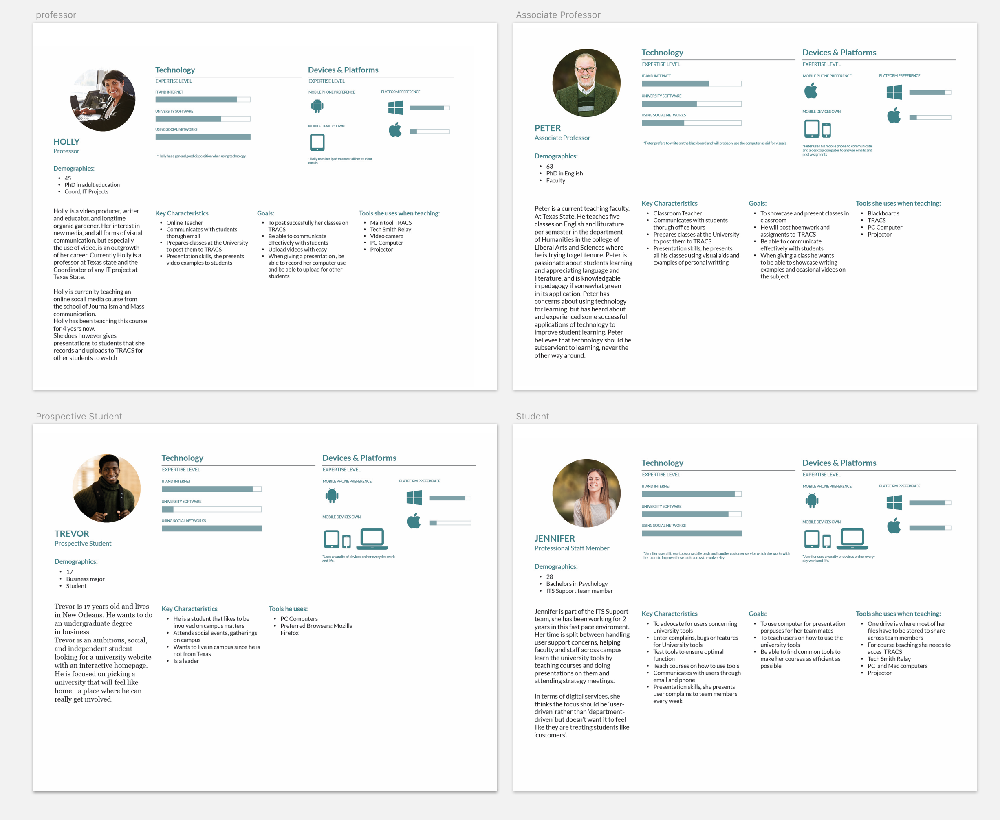

Faculty Profiles
A website that shows an accurate snapshot of a faculty member's work.
Role
Lead UX/UI Designer. In charge of designing user experience and UI elements.
Overview
Faculty Profiles is a public site where users can search and find faculty's profiles. Each professor in Texas State University has a system where they enter their Curriculum Vitae and this site shows that information in a interface that is user friendly.
Users can search for professors by name, keyword or by their associated college or department; covering a wider range on how users would search for information or a person. Searching a keyword would show faculty that have work, awards or any grant on that topic; exposing their talents to anyone who wishes to learn about Texas State faculty.
Strategy and Wireframes
For this project we were only given the desired results, to be able to find a faculty and show their profile. It was imperative to create a process that would account for the different approaches users would take in order to find a person.

I gathered requirements and features needed to create content for the site and mapped out possible user journeys utilizing personas from students, staff, or any outside person interested in accessing our profiles. By creating user journeys before creating any wireframes we were able to determine what filtering system we wanted on the front page and the hierarchy of information to be shown on the profile.
Read my notes on creating personas
Presenting High fidelity Design
After implementing some light design, mocks were presented to the project board and along with user testing we were able to delete and add some content that users were more interested in seeing inside a faculty's profile.

Collaborating with Devs
For initial delivery of elements I started by creating a small HTML CSS page and hosted it on my Github site to show a high-res prototype. I shared sketch files with inside pages and the rest of the elements for the site.
Final design was implemented you can visit the site at faculty.txstate.edu